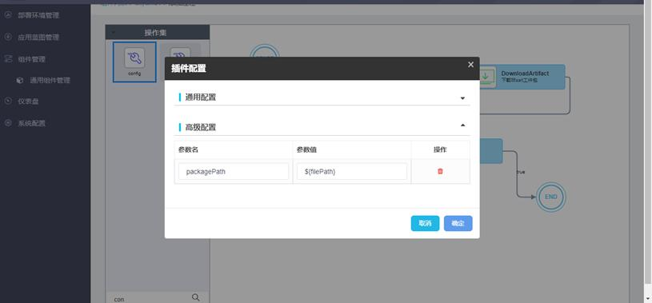
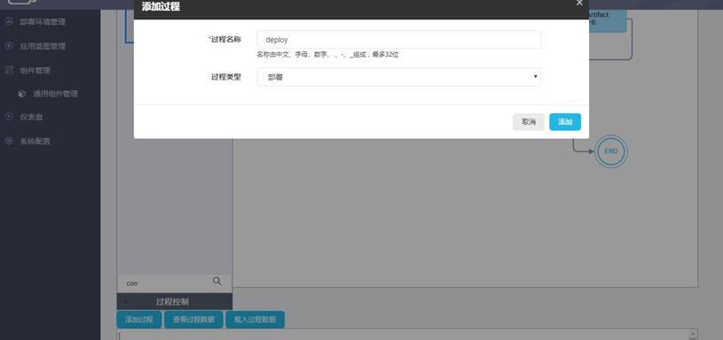

下面以绘制一个Tomcat组件的部署过程为例来说明组件过程设计器的使用过程。
1. 从工具栏的控制节点中拖动“开始”和“结束”到画板中。
2. 从工具栏的操作集中拖动DownloadComp、DownloadArtifact、unzip、config四个操作到画板中。鼠标点击节点的文字位置拖动，可以移动节点到任意位置，提升过程图可读性。操作集提供搜索功能，方便定位所需操作：

3. 鼠标移动到节点上，当光标变为手形时，点击鼠标左键拖动，可以画出过程连接线。鼠标左键单击节点或连接线可以选中，按“Delete”键可以删除节点或连接线。过程连接线是有向的，标记了过程的执行顺序。如图所示：
每个连接线都有一个条件属性，双击线上的文本内容可以编辑条件属性值。取值及含义如下：
l true: 表示当前操作执行成功（结果为true）时，执行true连接线指向的下一操作；
l false: 表示当前操作执行失败（结果为false）时，执行false连接线指向的下一操作；
l all（或为空）: 表示无论当前操作执行结果成功还是失败，都会执行all连接线指向的下一操作。
4. 双击操作可以修改操作的配置参数，每个操作都有各自的配置，具体含义参见6.2操作管理章节。

5. 组件过程绘制完成后，点击“添加过程”，输入过程名称并选择过程类型，点击“添加”即可保存成功。

组件过程绘制说明：
|
1、鼠标左键点击操作或控制节点拖拽，可以拖拽操作或控制节点到过程画板中； 2、鼠标置于节点上，当光标变为手形时，左键点击拖拽可绘制出过程连接线； 3、鼠标左键双击连接线上的文本，可以编辑条件属性值； 4、鼠标左键单击选中节点或连接线后，按Delete键可删除节点或连接线； 5、鼠标左键双击操作节点描述，可以修改描述信息以增加可读性； 6、鼠标左键双击操作节点，可以打开节点参数配置对话框； 7、过程必须以开始节点开始，以结束节点结束； 8、过程中所有节点必须是相连的，不允许有孤立节点存在，且不能出现环形结构； 9、聚合节点后不允许再连接操作，只能连接结束节点； 10、连接线上的条件只能是“true”、“false”、“all”、空4者之一 ，不允许是其他条件； 11、组件子过程中的步骤数（节点数）最多不应该超过2000个； 12、过程控制栏中的“立即结束”、“用户任务”、“分支”在此版本中暂不支持； 13、“开始”、“结束”节点有且仅有一个，整个过程第一个节点必须是“开始”、最后一个节点必须是“结束”； 14、判断节点分出的两个分支不允许在聚合节点或结束节点处汇聚。 |